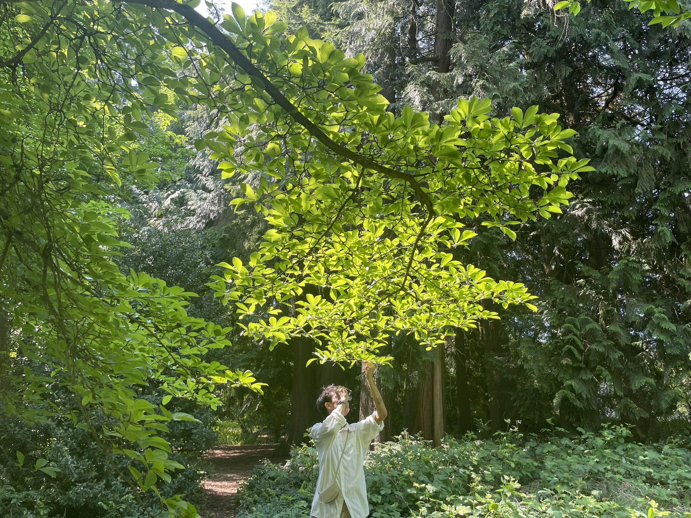

Sandesh Bhandari
Education
University of Toronto, Faculty of Arts and Science
HBSc. in Geography, Earth and Data Sciences
2026 · with High Distinctions- GPA: 3.91/4.0 · Dean's List Scholar
- Nicholas Wemyss Undergraduate Explorers Fund Award
- John Horner Undergraduate Scholarship in Geography
- University of Toronto Research Excellence Award (UTEA)
- Undergraduate Computer Applications Award
Experience
University of Toronto, Department of Geography & Planning
Research Assistant
January 2026 – Present- Supporting the primary research mandate through exploratory spatial analysis and rapid data visualization to iteratively test hypotheses and validate assumptions.
- Conducting spatial analysis of residential zoning typologies (R, RD, RS, RT, RM) along major arterial corridors to evaluate densification potential under updated Toronto zoning policies.
- Developing GIS workflows to classify parcel frontage (Front, Flank, Reverse) and model transit catchment zones relative to Major Transit Station Areas (MTSAs).
Downtown Brampton Business Improvement Area
Student Project Consultant
September 2025 – April 2026 · Placement- Collaborating with a multidisciplinary team to develop an integrated strategy for supporting 350+ small businesses impacted by the Hazel McCallion LRT tunnel construction through downtown Brampton.
- Conducting case study research on major GTA infrastructure projects (Eglinton Crosstown, Finch West LRT, Scarborough Subway, Yonge Extension) to identify best practices for construction mitigation.
- Designing physical, economic, and digital interventions, including pop-up markets, modular parklets, branded wayfinding, and business support programs, to sustain foot traffic and economic activities during construction.
- Engaging with businesses, municipal stakeholders, the BIA team, and community members to inform needs assessment and solution design.
Gehl Studio
Surveyor · Public Space Public Life Survey
September 2025- Assisted Gehl Studio in a campus-wide observational study, recording usage patterns and quality of public spaces at the St. George campus.
- Conducted structured field observations during peak activity periods, contributing to a dataset for the UTSG Campus Plan 2040.
- Collaborated with a multidisciplinary team of volunteers to support research on public space planning and urban design.
Skills
ArcGIS Pro, GeoPandas, OSMnx, Qgis, Folium
Pandas, JavaScript, Python, C, Rust, Polars, Tauri
D3.js, Seaborn, Leaflet, Illustrator, Photoshop, InDesign, Plot.js, Figma

I map cities, analyze earth systems, and write code to automate spatial workflows. My focus is translating raw geographic data into practical policy for climate resilience and infrastructure development. I like figuring out how physical spaces connect, and I read a lot.
© 2026 Sandesh Bhandari